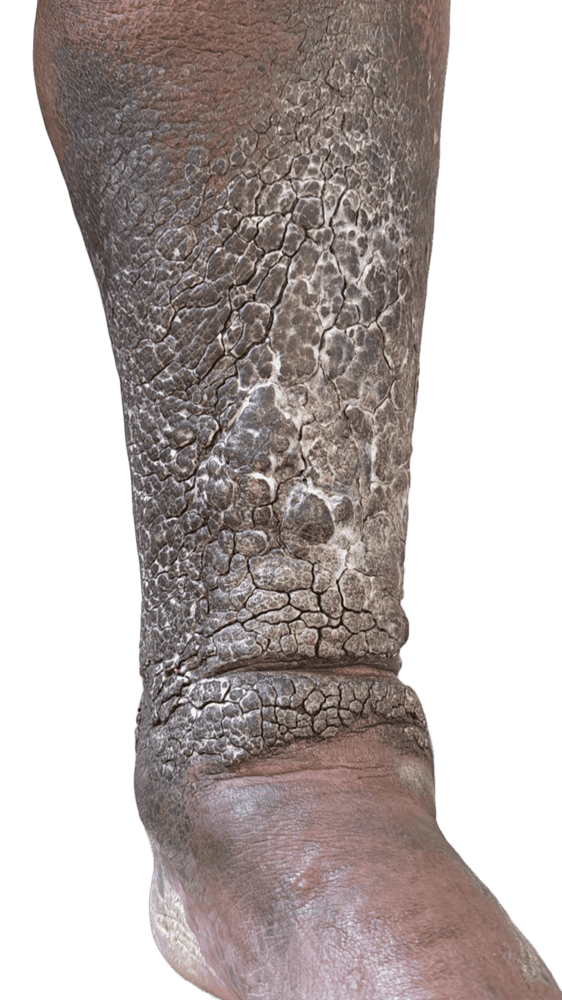
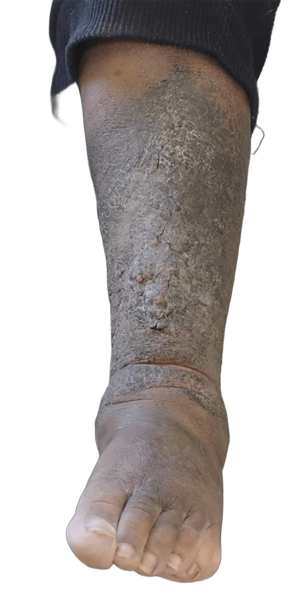
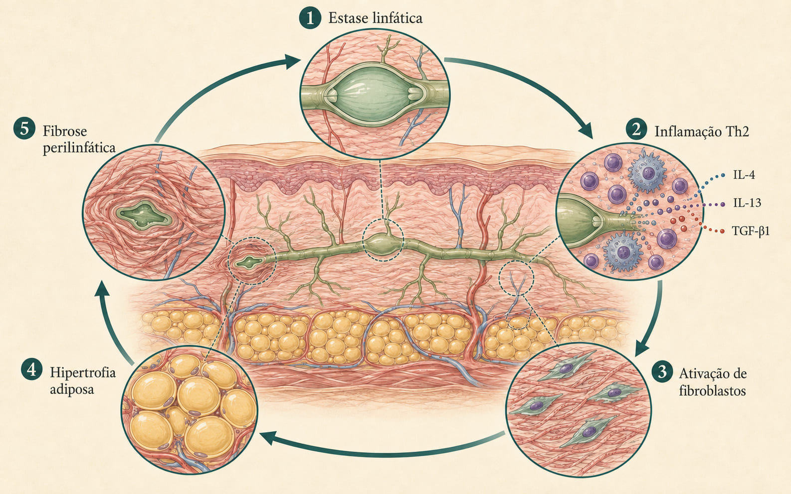
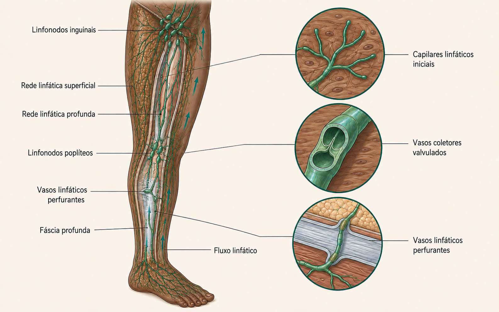
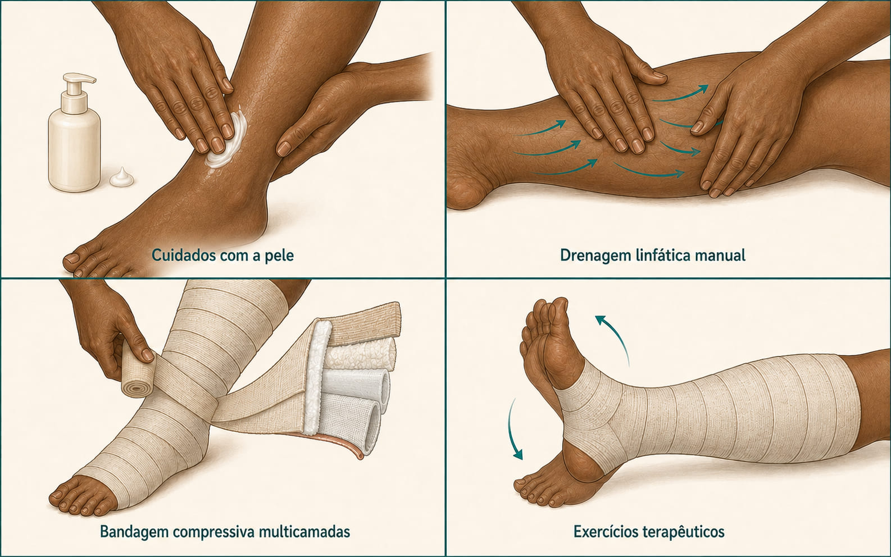
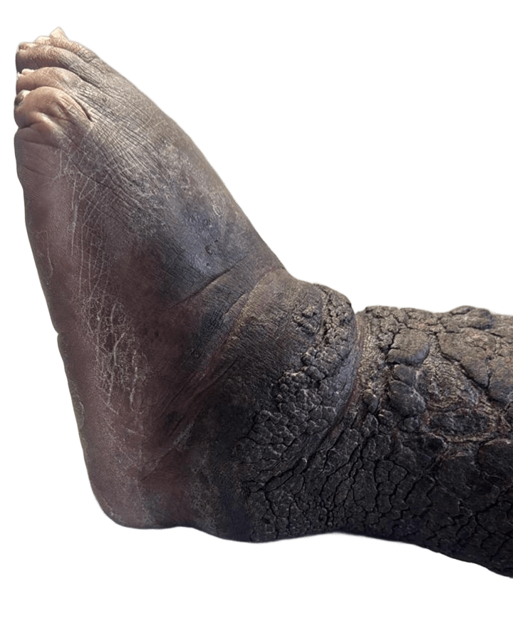

Linfedema: quando a pele guarda dez anos de história
Um caso acompanhado pelo Ambulatório de Feridas Complexas mostra o que acontece quando o sistema linfático perde a capacidade de drenar — e o que a terapia descongestiva consegue reverter, mesmo depois de uma década de evolução. Este material combina a fisiopatologia celular do linfedema com a prática clínica registrada em imagem, semana a semana.


© Imagens: Ambulatório de Feridas Complexas da Prefeitura Municipal de Pelotas — uso educacional autorizado.
O que é o linfedema
O linfedema é o acúmulo crônico e progressivo de fluido rico em proteínas no interstício, causado pela incapacidade do sistema linfático de transportar a carga de linfa que o corpo produz1. Não é "só inchaço": é uma insuficiência de baixo débito do sistema linfático — a capacidade de transporte cai abaixo do volume que precisa ser drenado, e o excesso se acumula nos tecidos2.
Classifica-se em dois grandes grupos. O linfedema primário decorre de displasia congênita dos vasos linfáticos, é raro e costuma se manifestar nos membros inferiores. O linfedema secundário — a grande maioria dos casos, especialmente no Brasil — resulta de obstrução ou destruição adquirida do sistema linfático: cirurgia oncológica com esvaziamento de linfonodos, radioterapia, infecções de repetição (erisipela, celulite), insuficiência venosa crônica não tratada, obesidade e, em regiões endêmicas, filariose linfática9.
Por que isso importa na prática
Estima-se prevalência de 1,3% a 1,5% na população geral, com cerca de 90% dos casos acometendo membros inferiores10. Como até 80% da capacidade de drenagem linfática pode estar comprometida antes de o edema se tornar clinicamente evidente10, o diagnóstico costuma chegar tarde — quando a pele já mudou de textura.
Por que a pele endurece: o ciclo inflamatório que sustenta o linfedema
A lesão de um vaso linfático não basta, sozinha, para produzir a pele que vemos nos casos de longa data. O que transforma um edema em linfedema estabelecido é um ciclo vicioso celular que se autoalimenta.

Histologicamente, o que se vê nas biópsias de pele com linfedema avançado confirma essa cascata: hiperplasia epidérmica com hiperceratose, acantose e papilomatose (as projeções verrucosas visíveis na pele), fibrose dérmica com espessamento dos feixes de colágeno, e fibrose perilinfática desorganizando a matriz ao redor dos vasos e adipócitos1. Nos vasos coletores, o padrão evolui de ectasia (dilatação inicial) para contração (hiperplasia de músculo liso) e, por fim, esclerose — com oclusão completa do lúmen linfático4.
Os estágios clínicos (Sociedade Internacional de Linfologia)
A classificação da ISL orienta prognóstico e conduta terapêutica. Um mesmo membro pode apresentar mais de um estágio simultaneamente, refletindo territórios linfáticos diferentes.
Transporte linfático já comprometido, sem edema clinicamente evidente. Pode durar meses ou anos.
Edema depressível (cacifo positivo), rico em proteína, que melhora com elevação do membro.
Fibrose e deposição de gordura já instaladas; elevar o membro deixa de reduzir o edema; o cacifo fica difícil de obter.
Hiperceratose, papilomatose, espessamento cutâneo intenso e dobras profundas — o quadro compatível com o caso deste relato.
A anatomia por trás do edema
O sistema linfático é formado por capilares iniciais (que captam o excesso de fluido intersticial), vasos coletores com válvulas unidirecionais, troncos linfáticos e linfonodos. Duas redes — superficial e profunda — se comunicam por vasos perfurantes que atravessam a fáscia, mantendo o equilíbrio hídrico dos tecidos e a vigilância imunológica1.
Quando essa rede é interrompida — por ressecção cirúrgica de linfonodos, fibrose pós-radioterapia, trauma, infecção de repetição ou displasia congênita — o segmento distal ao bloqueio perde capacidade de drenagem. Nos membros inferiores, isso costuma começar no tornozelo e no dorso do pé (como no caso deste relato) e progride proximalmente se não tratado9.
Nem todo edema de perna é linfedema
Diagnósticos diferenciais incluem insuficiência venosa crônica, insuficiência cardíaca, lipedema, trombose venosa profunda e mixedema. A avaliação clínica cuidadosa — história, inspeção da pele, sinal de Stemmer — é o primeiro passo antes de indicar terapia descongestiva9.

Terapia Complexa Descongestiva: o padrão-ouro
Não existe cura para o linfedema estabelecido — mas existe controle eficaz. Revisões sistemáticas publicadas em periódicos brasileiros (Fisioterapia Pesquisa, Jornal Vascular Brasileiro) confirmam a Terapia Complexa Descongestiva (TCD) como a abordagem conservadora mais efetiva, tanto em membros superiores quanto inferiores567.
A TCD organiza-se em duas fases7:
- Fase intensiva (redução): sessões diárias, de quatro a seis semanas, combinando os quatro componentes abaixo, com objetivo de reduzir o máximo possível o volume do membro.
- Fase de manutenção: uso de malhas/braçadeiras de compressão elástica, exercícios e cuidados com a pele para conservar o resultado obtido — em geral, por toda a vida.
Cuidados com a pele
Higiene rigorosa, hidratação diária e prevenção de fissuras — a porta de entrada mais comum para celulite e erisipela em pele com hiperceratose.
Drenagem linfática manual
Técnica manual suave que estimula vias linfáticas colaterais e redireciona o fluxo para territórios com drenagem preservada.
Enfaixamento compressivo
Bandagens de baixa elasticidade, em múltiplas camadas — considerado o componente mais determinante para a redução volumétrica.
Exercícios terapêuticos
Realizados sob a bandagem, a contração muscular funciona como bomba, favorecendo o retorno linfático.

Nos casos com pele já hiperceratósica e papilomatosa — como o deste relato — o cuidado com a pele deixa de ser coadjuvante e se torna prioridade clínica: fissuras profundas em placas hiperceratósicas são via de entrada para infecção de tecidos já comprometidos pela fibrose, criando risco real de sepse em pacientes acompanhados por décadas.
Técnicas adjuvantes à compressão convencional — como a bandagem elástica neuromuscular (kinesio taping) e a compressão pneumática intermitente — vêm sendo estudadas como alternativa para pacientes que não toleram o enfaixamento tradicional, especialmente em linfedema secundário ao câncer de mama. As revisões sistemáticas disponíveis ainda são majoritariamente baseadas em estudos de caso, com evidência insuficiente para indicar qual técnica é superior ao enfaixamento clássico8.
Como está a doença no mundo: o que a pesquisa está fazendo além da TCD
A TCD continua sendo a base do tratamento, mas o campo do linfedema está em movimento em três frentes: controle da causa global mais antiga (filariose), cirurgia que restaura fisiologia (não só reduz volume) e farmacologia dirigida ao próprio ciclo celular descrito na seção 2.
O panorama global
No mundo, a maior causa histórica de linfedema — e da forma mais grave, a elefantíase — é a filariose linfática, doença tropical negligenciada transmitida por mosquitos. Desde o ano 2000, o Programa Global da OMS para eliminação da filariose linfática já distribuiu mais de 10 bilhões de tratamentos em 71 países. Em 2024, o Brasil e o Timor-Leste estiveram entre os países mais recentemente validados pela OMS como tendo eliminado a filariose linfática como problema de saúde pública11.
É por isso que, no contexto brasileiro atual — como no caso deste relato — a esmagadora maioria dos linfedemas encontrados em ambulatório não é de causa parasitária, e sim secundária: pós-oncológica, venosa, infecciosa de repetição ou associada à obesidade.
Cirurgia fisiológica
Para casos que não respondem satisfatoriamente à TCD isolada, duas técnicas de supermicrocirurgia vêm ganhando espaço internacionalmente1213:
- Anastomose linfaticovenosa (LVA): conecta vasos linfáticos funcionantes diretamente a pequenas veias, indicada principalmente em estágios iniciais.
- Transferência de linfonodo vascularizado (VLNT): transplanta linfonodos saudáveis para a área afetada, mais indicada em estágios avançados; meta-análises mostram redução média de cerca de 30–40% do volume do membro.
O que está em fase de pesquisa
Estudos recentes investigam anticorpos neutralizantes contra IL-4 e IL-13 (mirando diretamente a via Th2 descrita na seção 2), inibidores de TGF-β1 para reduzir fibrose, terapias com VEGF-C para estimular a regeneração de vasos linfáticos, e até agonistas do receptor de GLP-1, associados em um estudo recente a até 86% de redução no risco de linfedema após esvaziamento axilar por câncer de mama. Até o momento, porém, nenhum agente farmacológico tem eficácia comprovada em ensaios robustos para o tratamento do linfedema já estabelecido — a TCD segue sendo a base do cuidado13.
Do ambulatório: dez anos de acompanhamento, três semanas de virada
Este caso foi compartilhado pela coordenação do Ambulatório de Feridas Complexas da Prefeitura Municipal de Pelotas, sob responsabilidade da enfermeira Lilian Rubira, como exemplo do que a parceria entre extensão universitária e assistência municipal pode produzir quando o cuidado é continuado.
SAFC — Serviço de Atenção às Feridas Complexas
Secretaria Municipal de Saúde · Prefeitura Municipal de Pelotas/RS
Início do quadro e primeiros acompanhamentos
Paciente em seguimento de longa data por linfedema crônico de membro inferior, com progressão para alterações cutâneas características de estágio III: hiperceratose e papilomatose extensas, fissuras profundas e espessamento acentuado da pele — o peso de uma doença tratada, mas nunca definitivamente resolvida, é também um peso emocional: a perda de esperança de melhora é um achado clínico tão real quanto o edema.
Quadro de base documentado pelo Ambulatório
As imagens que abrem este material mostram o estado do membro no início do protocolo atual: pele em placas hiperceratósicas espessas, sulcos profundos entre as placas e alteração de coloração compatível com estase crônica — o retrato clínico do ciclo celular descrito na seção 2.
Cuidados com a pele, compressão e acompanhamento contínuo
Após três semanas de conduta ativa do Ambulatório — com ênfase em hidratação, higiene rigorosa da pele e compressão — o mesmo membro já mostra amolecimento visível das placas hiperceratósicas, redução da profundidade das fissuras e melhora da textura geral da pele.

© Imagens: Ambulatório de Feridas Complexas da Prefeitura Municipal de Pelotas — uso educacional autorizado.
Do ponto de vista didático, este caso ilustra um princípio central da abordagem de feridas complexas: a distância entre o que a literatura descreve como mecanismo celular e o que se vê à beira do leito não é tão grande quanto parece. A hiperceratose e a papilomatose registradas nas fotos são, literalmente, o retrato clínico da fibrose dérmica e da hiperplasia epidérmica descritas na seção sobre mecanismo celular — e a melhora em três semanas é o retrato clínico de uma fase intensiva de TCD bem conduzida.
Perguntas para fixar o conceito
Antes de seguir para as recomendações práticas, vale parar no caso e pensar — sozinho ou em grupo — nas perguntas abaixo. Elas não têm uma única resposta certa; servem para testar se os mecanismos das seções 1 e 2 realmente fazem sentido diante do que as fotos mostram.
Por que dez anos sem grande evolução e apenas três semanas para uma mudança visível?
O que muda, do ponto de vista celular, entre "conviver" com o linfedema e entrar ativamente em uma fase intensiva de TCD? A fibrose já formada precisa ser desfeita para haver melhora, ou o alvo do tratamento é outra coisa?
A pele hiperceratósica é causa ou consequência?
Reveja o ciclo da Fig. 1. A hiperceratose e a papilomatose são o motor do linfedema ou o resultado visível de um processo que já vem de mais profundo?
Se a compressão é o componente mais determinante da TCD, por que não bastaria apenas comprimir?
Pense no papel específico de cada um dos quatro componentes — o que aconteceria se apenas a bandagem fosse usada, sem cuidado com a pele nem exercício?
Por que a maioria dos casos de linfedema atendidos hoje no Brasil não é causada por filariose?
O que mudou epidemiologicamente no país nas últimas décadas — e o que isso implica para o perfil de paciente que a equipe de enfermagem e medicina vai encontrar no ambulatório?
Recomendações gerais para a equipe de enfermagem e medicina
Suspeitar antes do edema óbvio
Até 80% da capacidade de drenagem pode estar comprometida antes do edema ser clinicamente evidente. Investigar fatores de risco (cirurgia oncológica, radioterapia, erisipela de repetição) mesmo sem inchaço visível.
Tratar a pele como órgão de risco
Em estágios avançados, fissuras em placas hiperceratósicas são a principal porta de entrada para infecção. Hidratação e higiene diárias não são cuidado estético — são prevenção de sepse.
Tratamento é vitalício, não um ciclo
Sem manutenção contínua (malha de compressão, exercícios, autocuidado), o volume tende a retornar. Educar o paciente para a cronicidade evita frustração e abandono terapêutico.
Acolher a dimensão psicossocial
Estigma, dor crônica e limitação funcional acompanham o linfedema avançado. Um paciente que perdeu esperança precisa ver evolução documentada — como neste caso — para reengajar no cuidado.
O que fica desta leitura
O linfedema não é um inchaço estático: é um ciclo celular ativo de estase, inflamação e fibrose que, sem interrupção, redesenha a pele. Entender esse mecanismo — do CD4⁺ Th2 ao TGF-β1, do fibroblasto ativado à papilomatose visível — é o que transforma a Terapia Complexa Descongestiva de "protocolo de compressão" em intervenção biologicamente racional.
Para quem se forma em Enfermagem ou Medicina, o aprendizado que este Ambulatório oferece vai além da técnica: é a evidência de que cuidado continuado — extensão universitária, ambulatório e paciente, juntos — devolve não apenas volume ao membro, mas esperança à pessoa.
Fontes científicas citadas no texto
- Tripathi M, Markan A, Gurnani B. Lymphedema. In: StatPearls [Internet]. Treasure Island: StatPearls Publishing; 2025. Disponível em: https://www.ncbi.nlm.nih.gov/books/NBK537239/
- International Society of Lymphology. The Diagnosis and Treatment of Peripheral Lymphedema: 2023 Consensus Document of the International Society of Lymphology. Lymphology. 2023;56(3):133-151. Disponível em: documento completo (PDF)
- Current Understanding of Pathological Mechanisms of Lymphedema. PMC. Disponível em: https://pmc.ncbi.nlm.nih.gov/articles/PMC9051876/
- Lymphatic Collecting Vessels in Health and Disease: A Review of Histopathological Modifications in Lymphedema. PMC. Disponível em: https://pmc.ncbi.nlm.nih.gov/articles/PMC9603277/
- Paz IA, Fréz AR, Schiessl L, Ribeiro LG, Preis C, Guérios L. Terapia complexa descongestiva no tratamento intensivo do linfedema: revisão sistemática. Fisioter Pesqui. 2016;23(3):311-7. Disponível em: https://www.scielo.br/j/fp/a/LDR87gS5ScxxXGKbGzSVRqn/
- Eficácia da terapia complexa descongestiva para linfedema nos membros inferiores: revisão sistemática. J Vasc Bras. Disponível em: https://www.jvascbras.org/article/doi/10.1590/1677-5449.190074
- Conservative treatment of lymphedema: the state of the art. J Vasc Bras. Disponível em: https://www.scielo.br/j/jvb/a/qDV4DYGdFrqqNhRxhTSRxbb/
- Weimer Cendron S, Laureano Paiva L, Darski C, Colla C. Fisioterapia Complexa Descongestiva Associada a Terapias de Compressão no Tratamento do Linfedema Secundário ao Câncer de Mama: uma Revisão Sistemática. Rev Bras Cancerol. 2015;61(1):49-58.
- Douketis JD. Linfedema. Manuais MSD, edição para profissionais. Revisado/corrigido em abril de 2024. Disponível em: página sobre linfedema
- Comissão Nacional de Incorporação de Tecnologias no SUS (CONITEC). Meias elásticas de compressão para o tratamento do linfedema de membros inferiores. Relatório nº 590, 2021.
- World Health Organization. Global programme to eliminate lymphatic filariasis: progress report, 2024. Weekly Epidemiological Record. Disponível em: https://www.who.int/publications/i/item/who-wer10040-439-449
- Advances in surgical management of chronic lymphedema: current strategies and future directions. Medical Oncology, 2025. Disponível em: https://link.springer.com/article/10.1007/s12032-024-02576-2
- International Strategies for Lymphedema Management. Current Physical Medicine and Rehabilitation Reports, 2025. Disponível em: https://link.springer.com/article/10.1007/s40141-025-00514-5
Crédito institucional
Casos clínicos elaborados em parceria pelos projetos Amor à Pele e do PETG10-Saúde Digital — telemonitoramento de pessoas com feridas crônicas, coordenados pela profa. Adrize Rutz Porto, FEn-UFPel, em parceria com o Ambulatório de Feridas Complexas da Prefeitura Municipal de Pelotas.